Optimization¶
What is an experiment? This question has many answers, but across many fields an experiment can be described as:
- Preparation of an initial sample
- Performing a sequence of actions on the sample
- Measuring the result
In atomic physics, theorists love to track the state of an atomic system while applying a series of unitaries; on the experimental side, it is useful instead to track the state of the devices performing these actions. We suggest that any experiment can be formally modeled through a functional
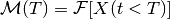
In words: the measurement result at time  is a function of the state vector
is a function of the state vector  at
all times leading up to the measurement. The state vector is a representation
of the individual states of all devices involved in the experiment. We are often
concerned with determining the state vector
at
all times leading up to the measurement. The state vector is a representation
of the individual states of all devices involved in the experiment. We are often
concerned with determining the state vector  which minimizes or maximizes
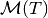.
which minimizes or maximizes
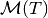.
Steady-state optimization¶
To make this formalism more intuitive, let's first study an experiment with a
memoryless cost functional 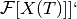, where the measurement depends on the input
state at time but not the history. Let's see how EMERGENT describes this process.
State representation¶
Each physical degree of freedom is represented by an Input node; in this case, there are two nodes labeled X and Y which
represent the tip and tilt of the mirror. The Input.state attribute stores a
float representing the instantaneous state of the input.
The Input.set(state) method updates the state of the input to the
argument by requesting a new state from the parent Device node. Device nodes
represent physical actuators such as the MEMS voltage control board; the Device
stores the state of its inputs in a dictionary with the example format
Device.state = {'X':1, 'Y':2}.
When the Input node requests a new state, the Device.actuate(state) method
is called. This does two things: first, the Device._actuate(state) method
updates the physical state (the real tip/tilt), in this case via SPI commands
to a DAC on the MEMS driver board (note that the Device.actuate() method is
a property of the core Device class, while the private Device._actuate()
method must be implemented separately for each device). Next, the Device.update(state)
method is called. This keeps the virtual state synchronized with the physical
state by simultaneously updating the state variables of the Input, Device, and Control
nodes.
The Control node oversees the entire experiment by issuing commands to the inputs
during optimization algorithms. It contains methods, tagged with the @cost decorator,
which prepare and evaluate a target state. The state of the Control node is
represented similarly to the Device node, but the dictionary keys also include
the device names; for example, the Control node called autoAlign is connected
to a MEMS Device node which has two inputs X and Y, so the state is
Control.state = {'MEMS.X':1, 'MEMS.Y':2}.
Optimization¶
To make the connection clear between the code and the formalism, here is the typical optimization sequence:
The initial state
is represented through a dict state, and is passed into the Optimizer module along with a cost functioncost.The cost function 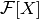 is evaluated by calling
cost(state).Control.actuate(state)calls theInput.set(state)method on every input in the state vector.- Each Input node requests a new state from the Device node.
- The Device node runs
Device.actuate(state)to update the physical state. - A physical measurement of is made.
The learner updates its knowledge of the cost landscape , suggests a new state
, and returns to step 2.
Example: fiber alignment¶
An example which is ubiquitous in AMO
physics is the fiber coupling problem, in which we want to steer a laser beam
into an optical fiber to maximize the light transmitted on the other end. This
is typically done by controlling the tip and tilt of two mirrors, where the more
distant mirror is used to translate the beam relative to the fiber tip while the
closer is used to adjust the angle. If only one mirror is adjusted, the measurement
will look like the Gaussian overlap of the beam and the fiber mode, and simple
hill-climbing algorithms can be employed to find the tip/tilt pair  which
maximizes the measurement
which
maximizes the measurement  . This is an example of a convex optimization problem,
where the local minimum is also the global minimum.
. This is an example of a convex optimization problem,
where the local minimum is also the global minimum.
And the results: the graphs below show a real fiber alignment routine run by EMERGENT. The left graph plots the simplex trajectory over the independently measured cost landscape, while the right graph shows a time series of the optimization, demonstrating convergence in several seconds.


Time-dependent optimization¶
Turning now to a more complicated time-dependent cost functional, we consider
the problem of magneto-optical trapping, in which atoms are trapped at the zero
of a quadrupole magnetic field in a red-detuned laser beam. The problem can be
formulated as a memoryless cost functional depending on parameters such as the
field strength and laser detuning, but the trapping can be improved by adding a
time-dependent ramp such that the Doppler and Zeeman shifts keep the beam resonant
while the atoms cool. In this case we are tasked with determining not the
steady-state parameter values but instead the ramp shape which maximizes the
number of trapped atoms. Algorithmic optimization of atom cooling has been
achieved through parameterized ramps, where each of the  inputs 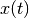 is stepped
discretely through 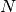 steps 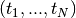; the setpoints of each parameter are used
as inputs into a regressor which interpolates the 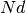-dimensional cost landscape
to search for a minimum. Unlike the simple fiber coupling example, these problems
possess very complex, high-dimensional cost landscapes which may have many local
minima as well as high shot-to-shot noise, so deterministic convex solvers such
as gradient descent algorithms are unlikely to find the global minimum. A solution
is to use stochastic optimization algorithms, such as differential evolution or
stochastic artificial neural networks. Here the objective is to model rather than
simply explore the cost landscape, and to use information gained in each cycle
to improve the determination of the global maximum.
inputs 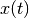 is stepped
discretely through 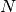 steps 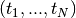; the setpoints of each parameter are used
as inputs into a regressor which interpolates the 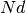-dimensional cost landscape
to search for a minimum. Unlike the simple fiber coupling example, these problems
possess very complex, high-dimensional cost landscapes which may have many local
minima as well as high shot-to-shot noise, so deterministic convex solvers such
as gradient descent algorithms are unlikely to find the global minimum. A solution
is to use stochastic optimization algorithms, such as differential evolution or
stochastic artificial neural networks. Here the objective is to model rather than
simply explore the cost landscape, and to use information gained in each cycle
to improve the determination of the global maximum.
Sequence representation¶
Let's look at how EMERGENT handles sequences. For example, let's
consider a Control node called MOT with a Device node laser and and
an Input node frequency. We define a sequence of an Input node as a list of
tuples, where each tuple represents a point in the sequence; its first element
is the time, while its second element is the state at that time. Let's define a
four-step ramp over a 1 second experimental cycle:
MOT.inputs['laser.frequency']=[(0,-42),(0.25,-35), (0.5, -28), (0.75, -21)]
Now let's add a new Device coils with an Input gradient, which will
be ramped in a two-step sequence:
MOT.inputs['coils.gradient']=[(0,50),(0.5, 25)]
Sequencing is handled by the Clock module. The Clock.prepare_sequence() method
inspects the sequences of the individual inputs, then prepares a master sequence
composed of the total experimental state at all timesteps:
MOT.clock.prepare_sequence()
MOT.sequence
[(0.25, {'laser.frequency': -42, 'coils.gradient': 50}),
(0.25, {'laser.frequency': -35, 'coils.gradient': 50}),
(0.25, {'laser.frequency': -28, 'coils.gradient': 25}),
(0.25, {'laser.frequency': -21, 'coils.gradient': 25})]
The sequence can be run for a single shot with Control.clock.run_once() or
looped with Control.clock.start(). For each tuple in the sequence, the state
dict is passed into the Control.actuate() method; afterwards, there is a delay
given by the first element of each tuple before the next actuation.
Example: ramped loading¶
For an example of a time dependent optimization problem, consider the 1D functional
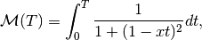
which qualitatively reproduces the required behavior to optimize a MOT - the functional is maximized for the ramp 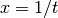. If we were naive to the form of the cost function, we could algorithmically maximize the function. We discretize the inputs as 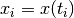 and compute the cost function as
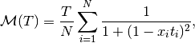
where 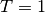. This function is implemented in the emergent/examples/basic
network as control.cost_ramp, which takes a sequence as an argument. This
example can be run with the TestControl.optimize_sequence() function.
We'll initialize the state with a guess 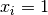 for all  and run a
simplex algorithm to optimize the inputs. Note that EMERGENT's algorithms can
handle states or sequences interchangeably - if you pass in a state like
and run a
simplex algorithm to optimize the inputs. Note that EMERGENT's algorithms can
handle states or sequences interchangeably - if you pass in a state like
state={'X':1, 'Y':2}, it decomposes it to array form [1,2] before
optimization, whereas a sequence like {'X':[(0,0),(0.5,1)], 'Y':[(0,2), (0.5,3)]}
is represented in array form as [0,1,2,3]. After this, the algorithm doesn't
care if it's working with a state or sequence - it simply passes this array into
a cost function which actuates a state or runs a sequence and returns a result.
Subspace decoupling¶
The sophisticated algorithms contained in the EMERGENT library can optimize cost
functions of many degrees of freedom, but most powerful of all is the ability to
avoid this through subspace identification and dimensional reduction. By using
principal component analysis, EMERGENT will be able to project the cost landscape
onto a set of orthogonal virtual inputs, hence decomposing a high-dimensional
coupled optimization problem into many lower-dimensional problems. To see the
power of this, consider a grid search algorithm which searches for an optimum
point with uniformly sampled points for each of devices. The
number of iterations required, 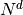, is entirely infeasible for even modest
numbers of devices - for example, just a coarse 10-step sampling with 10 connected
inputs would take 317 years with an experimental cycle of 1 Hz! However, by
diagonalizing the covariance matrix, the problem can be reduced into 10 1D
optimizations which can be performed independently, requiring only steps!
In doing so, we replace the physical inputs with virtual inputs, which are linear
combinations of the original ones.
For example, consider a cost landscape consisting of a stretched two-variable
Gaussian which is rotated by 30 degrees about the  axis. The effects of
the coupling are evident: performing a line search in
axis. The effects of
the coupling are evident: performing a line search in  or
or  alone will not in general find the maximum, since by changing one variable we
change the optimal position of the other. However, we can efficiently solve the
problem by rotating our inputs into a frame where they are decoupled. Then, we
can solve two separate 1D optimization problems in terms of the rotated inputs.
alone will not in general find the maximum, since by changing one variable we
change the optimal position of the other. However, we can efficiently solve the
problem by rotating our inputs into a frame where they are decoupled. Then, we
can solve two separate 1D optimization problems in terms of the rotated inputs.